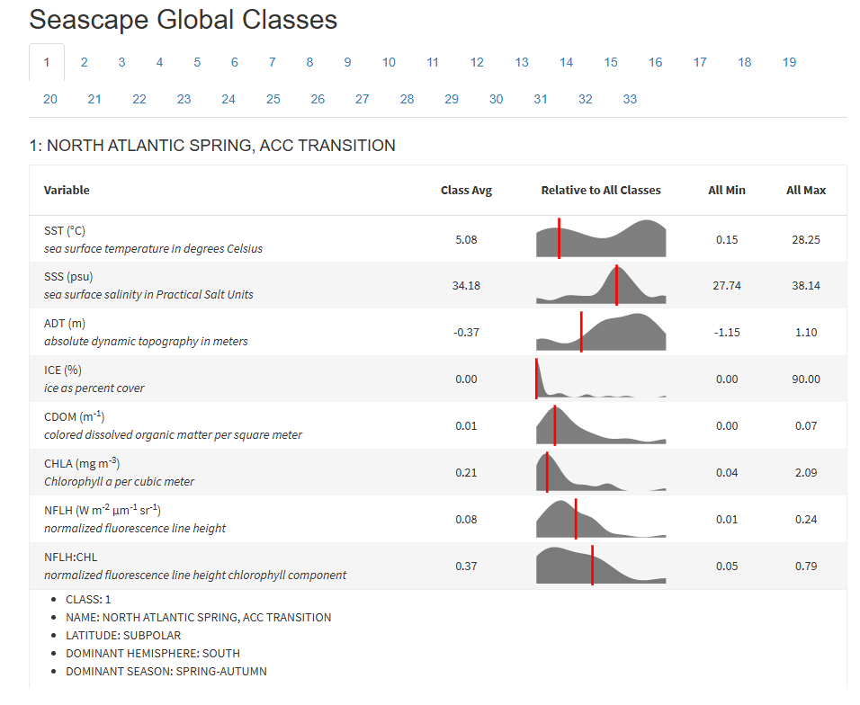
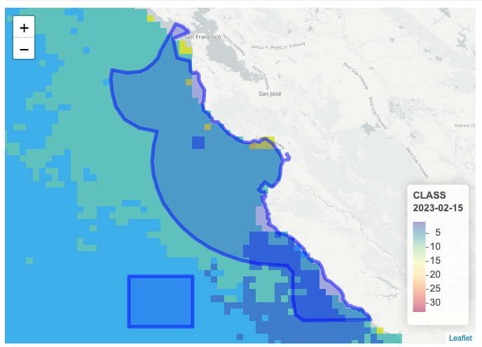
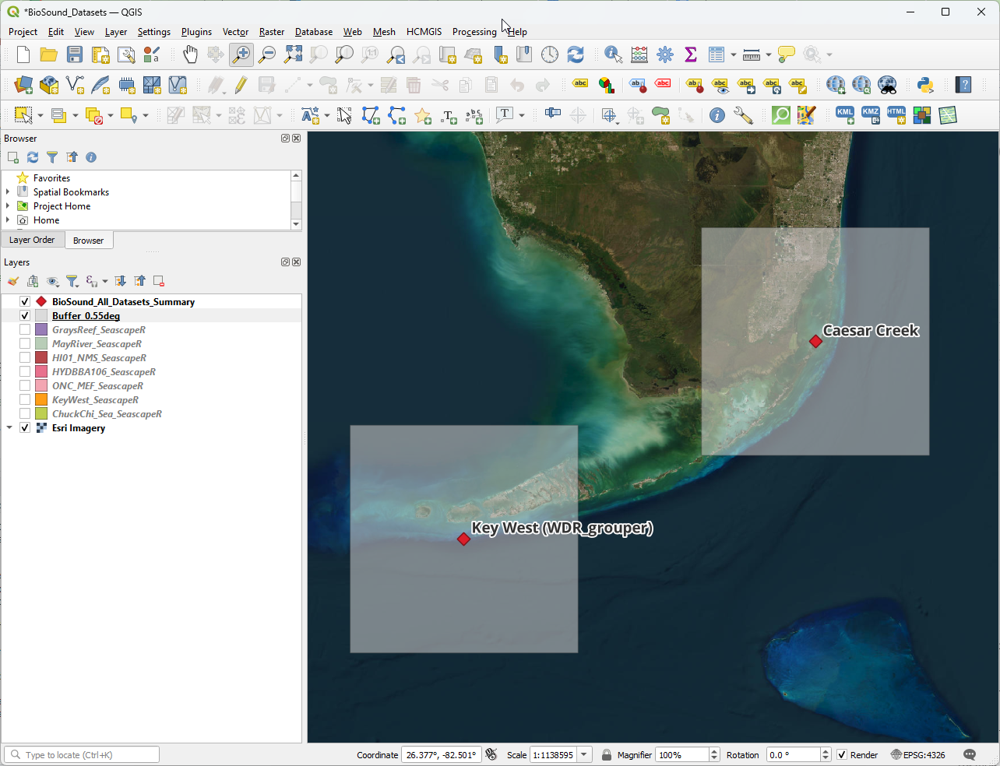

Data Processing & Management
Acoustic-based Indices
Comparing acoustic data from different regions and providers can be complex due to variations in sampling rate, file duration, and file naming conventions. Differing sampling rates can affect the resolution and frequency content of recordings, while variations in file duration may influence the amount of data available for analysis. Additionally, inconsistencies in file naming conventions can hinder data organization and interoperability, requiring careful preprocessing and standardization efforts to ensure accurate and meaningful comparisons across datasets. The csv outputs from scikit-maad processing can be found in the “Acoustic Indices” folder on this documentation GitHub site.
The following steps were required to produce acoustic-based index variables:
Audio File Naming Convention: scikit-maad extracts date and time information from audio file names and can accept one of two formats. For this project, we proceeded with the SM4 format, which consists of some prefix, followed by the date starting with year and time (e.g., PREFIX_YYYYMMDD_HHMMSS.wav). All datasets required audio file renaming in order to extract temporal information for plotting these time-series data. Per-site scripts generated for renaming files generated renamed copies of the data (to ensure originals were retained) are provided in the “DataManagement_Code” folder on the GitHub repository.
File Segmentation: Another challenge presented during this project was the limitations of processing data with large audio files, particularly the sanctuary data. This in addition to some programmatic challenges at calculating indices at specific durations, resulted in the need to segment audio files into smaller durations. For all sanctuary sites and the Chuckchi Sea, audio files were segmented into 5-minute files, which was the largest duration for all datasets. Although a graphical user interface (GUI) was developed during this study to allow for user-defined index calculations, this did not work for all datasets, so several required further segmentation into 2.5-minute files. Note that 120 and 150-second files are considered the same file duration as reducing the file duration from five minutes to smaller files requires 150-second interval. The python code for segmenting wav files can be found in the “DataManagement_Code” folder.
Processing Limitations: Processing a suite of 58 index variables for a month of data at a time is a computationally intensive process. As an example, processing one month of data with a 64 kHz sampling rate and 5-min interval at full bandwidth on a Windows 11 Desktop with an Intel Core i7-10700 CPU @2.9 GHz and 32 GB of RAM took an average of two and a half days to complete. Processing at the 30-second and 10-second intervals was not feasible for datasets with continuous, five-minute files. In an attempt to streamline the process by testing out an Amazon Warehouse Service (AWS) EC2 virtual machine instance, uploading a week of data took approximately 16 hours. We, therefore, did not proceed with the smallest duration index calculation for this exploratory project but did evaluate 120/150-second durations for six of the eight datasets, and 300 seconds for five of the eight datasets. Due to smaller file sizes, the May River and Key West datasets were processed at the 10-second duration for 16 kHz bandwidth runs in addition to their native durations for the month of February. Potential next steps and solutions to processing limitations are discussed in the “Recommendations” section.
Decimation: All datasets (aside from Chuckchi Sea) required decimation to the lowest sampling rate (16 kHz, which is the sampling rate for Chuckchi Sea) for comparison at a common spectral bandwidth. The OSA EZ-Decimator was used to generate separate downsampled datasets from the folder of renamed files.
Processing Stages: The processing of each dataset included several runs using settings in the scikit-Maad batch processing code for either a full bandwidth or 16 kHz bandwidth. The code first requires manual setting of the hydrophone calibration and gain settings, then requires the user to determine the low, medium, and high spectral band thresholds. These included:
Full Bandwidth: 0-1,500 Hz (low); 1,500-8,000 Hz (med); 8,000 - Nyquist (high)
16 kHz Bandwidth: 0-1,000 Hz (low); 1,000-4,000 Hz (med); 4,000-8,000 Hz (high)
An FFT rate is required for user selection, and a test of Key West indicated longer processing times for larger FFT’s without an effect on the trends of the index values. Therefore an FFT of 512 was selected for all processing.
Annotations: Several datasets provided annotations that were used in the evaluation of acoustic indices. The greatest resolution in annotations of underwater biophony was from the Key West and May River datasets, resulting in their highlight on the “Annotations” tab of the dashboard. The sanctuary sites (Gray’s Reef and Hawaii) provided an annotation dataset of cetacean occurrence but on an hourly level, which was too low a resolution to derive meaningful indices associations. Vessel annotations were available for four of the eight datasets. Triton, the analytical tool used to identify passing vessels was used for annotation of vessels in all remaining datasets with continuous audio. There were limitations to this as the automated Ship Detector remora resulted in a significant amount of false positives (from the Chuckchi dataset), or missed several harder to discern vessels (e.g., from the ONC-MEF dataset, presumably as it is at a depth of over 2,000 meters). For three of the datasets, vessels were annotated in Triton as was recommended by documentation. Additionally, this tool does not work as well with short duration files, so we were unable to obtain vessel information from the Caesar Creek dataset.
The GUI-enabled batch processing code for scikit-maad is available on the OSA scikit-maad-biosound repository.
Environmental Data using SeascapeR
Using remotely sensed data for accessing environmental information for these study areas required incorporating multiple variables into an appropriate format for comparing with time series acoustic indices data. The MBON SeascapeR tool was selected due to the water class designations that combine ocean color products (e.g. sea surface temperature, CHLA, etc.) of varying thresholds into a single category.

The seascapeR code natively queries a database of sanctuary shapefiles, which are used to define the region for which the classes are determined. The grid resolution within a shapefile is set to 0.05 x 0.05 degrees in a geographic coordinate system, providing water class values within approximately 5.6 km cells (1 degree = ~ 111.1 km at the equator, shrinking towards the poles). The code natively queries monthly composite data from ERDDAP (Metadata), for each 5.6 km cell within the provided sanctuary shapefile:

Modifications for BioSound Use
The sites used for BioSound included both sanctuary and non-sanctuary sites and required greater resolution in the ocean color data composites. The following steps were taken to obtain seascapeR water class data for each of the sites used in this study. The modified seascapeR code for this project is available on OSA’s seascapeR-biosound repository.
- SeascapeR code was modified to select 8-day composites (Metadata) of water class data, the highest resolution possible that provided gridded data to the fullest extent possible for each site.
- Custom shapefiles were required to be able to obtain water class data for each of the sites. Given the need to define comparable shapefiles for each of the study areas, a standard shape file was generated. Buffers of 0.55 squared degrees were created surrounding each hydrophone’s location resulting in approximately 60 km by 60 km shapefiles. Shapefiles overlapped with land for several sites, resulting in a lower sample size, however the larger shapefile region still resulted in sufficient coverage for each site.
- SeascapeR was used to extract water class percentages for each dataset, and written to csv files for incorporation with other data products.

Data Compilation & Collation
Compiling acoustic index variable data from multiple sites, each with varying durations and sampling rates, was essential for subsequent data summarization and visualization. Furthermore, consolidating annotation information, vessel occurrences at each site, and water class data is necessary to provide comprehensive context for the acoustic recordings and facilitate meaningful analysis.
The dashboard is built using R Shiny. The acoustic indices, water class data, and annotations data are prepared in Python and stored in a duckdb database (stored locally due to file size, and on OSA’s BioSound Google Drive site for data products). All of the code used in the preparation of the data and dashboard can be found at the osa-mbon GitHub repository associated with Waveform-Analytics.